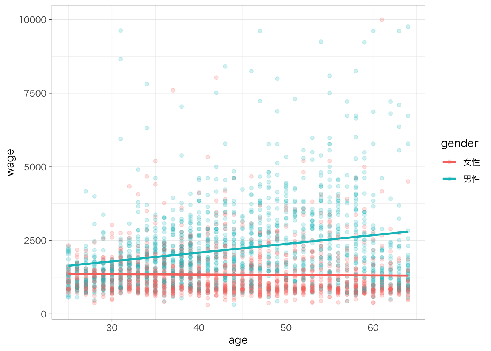
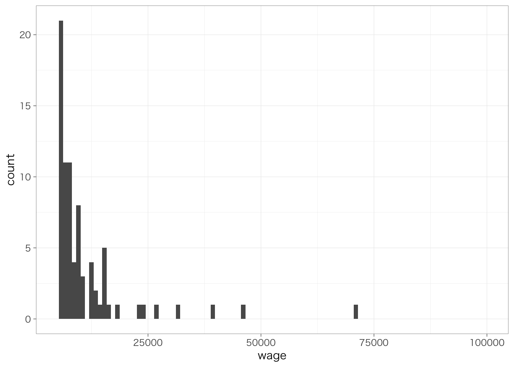
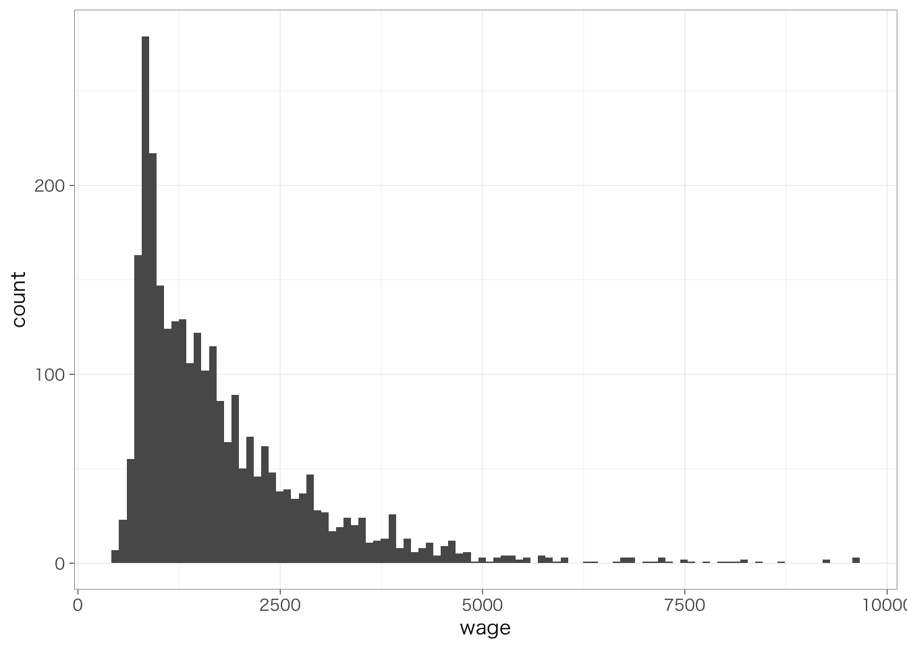

Chapter 4 データの加工
この章ではデータの加工方法について説明する。
内容に入る前にいくつか確認しておこう。
第1に、右上のプロジェクトのボックスの横が、第2章で作成したプロジェクトの名前（たとえば、seminar_sociology_r）になっているかどうかを確認しておこう。なっていない場合は、右上のボックスをクリックして、「Open Project…」を選択し、前章で作成したRprojファイル（たとえば、seminar_sociology_r.Rprojといったような名前になっている）を選んで、プロジェクトを切り替えよう。
第2に、第3章で確認したとおり、データを格納するためのフォルダがプロジェクトフォルダ内に準備されていることを確認しよう。作っていない場合には、データを置く場所を作るを確認し、作成しておこう。
第3に、上記の準備をすませたうえで、以下のとおりtidyverseパッケージを読み込もう。
4.1 本資料で用いるデータ
本資料では基本的に、OECDが実施している国際成人力調査Programme for the International Assessment of Adult Competencies, PIAACの日本版データをサンプルデータとして使用する。
ダウンロード手順は以下のとおり。まず、Dataのページから “Download the datasets (Public Use Files)” > “csv” > “prgjpnp1.csv” を選択して、ファイルをダウンロードできる。
ダウンロードファイルを「data」のフォルダに入れるのを忘れずに。
「data」のフォルダに入っていることを確認して、データを読み込む。このデータは少し特殊で、数値のほかに文字列などが入っている。そのため、すこしだけ特殊な処理をほどこしてデータを読み込むことにする。
piaac <- read_csv("data/prgjpnp1.csv") %>%
mutate_if(is.character, as.numeric) %>% #すべての文字列変数を小文字に変換
rename_all(.funs = tolower) #すべての大文字を小文字に変換## Rows: 5278 Columns: 1328
## ── Column specification ───────────────
## Delimiter: ","
## chr (470): DISP_MAIN, B_Q01a3, B_Q01a3_C, B_Q01b, B_Q01c1, B_Q01c1_C, B_Q01c...
## dbl (656): CNTRYID, CNTRYID_E, SEQID, AGE_R, GENDER_R, DISP_CIBQ, A_N01_T, B...
## lgl (202): DISP_MAINWRC, D_Q16b_T, P901002R, P901002S, P904012R, P904012S, P...
##
## ℹ Use `spec()` to retrieve the full column specification for this data.
## ℹ Specify the column types or set `show_col_types = FALSE` to quiet this message.通常、SSJDAなどの機関を通して社会調査データをダウンロードしたときに文字列が入っていることはまれなので、あまり心配しなくてよい。
4.2 データ加工のステップ
いざデータを手に入れて読み込むことができたとしても、そこから分析に至るまでにはデータを加工して、分析の準備をしなくてはならない。このデータ加工は、大きく分けて以下の2つ（3つ）のステップからなる。
- 変数の作成
- サンプルの限定
- データの追加（該当者のみ）
データの加工を行う際には、今書いているコードがそれぞれ上記3つの作業のうちどの作業に該当するのかを混同しないように注意する。
変数の作成とサンプルの限定とはそれぞれ次のような操作を指す。たとえば、以下のようなデータがあるとする。
## # A tibble: 6 × 3
## id x1 x2
## <int> <dbl> <dbl>
## 1 1 5 1
## 2 2 8 1
## 3 3 2 1
## 4 4 0 2
## 5 5 6 2
## 6 6 1 2「変数の作成」では、この元データを加工して、次のような列を追加する作業にあたる。
## # A tibble: 6 × 5
## id x1 x2 x3 x4
## <int> <dbl> <dbl> <dbl> <chr>
## 1 1 5 1 500 男性
## 2 2 8 1 800 男性
## 3 3 2 1 200 男性
## 4 4 0 2 0 女性
## 5 5 6 2 600 女性
## 6 6 1 2 100 女性「サンプルの限定」は、データから一部の対象者だけを選ぶ、言い換えれば行を削除する作業にあたる。
## # A tibble: 3 × 5
## id x1 x2 x3 x4
## <int> <dbl> <dbl> <dbl> <chr>
## 1 1 5 1 500 男性
## 2 2 8 1 800 男性
## 3 5 6 2 600 女性4.3 変数の作成
データを読み込んだとしても、調査で尋ねられた回答（列）をそのまま使えることはまれで、無回答を示す番号（9など）が含まれていたり、数値が意図しているならびと逆向きになっていたりと、そのままでは使えないことが多い。このような場合には、回答を記録した列を加工して、自分で意図した変数へと変換していく必要がある。社会調査データの分析を行う場合、かなり多くの作業がこの「変数の作成」に使われることになる。
4.3.1 変数の型（カテゴリ変数と連続変数）
変数は、その種類によって（大きく）カテゴリ変数と量的変数に分けることができる9。
| カテゴリ変数の例 | Rで扱うときの型 | |
|---|---|---|
| カテゴリ変数 | 性別、居住地域、職業など | factor |
| 連続変数 | 所得、幸福度など | numeric |
カテゴリ変数は、グループや属性といったように、足し算や引き算をしたり、平均値を取ったりといった操作に意味のない変数を指す。たとえば居住地域の場合は、「東京都」「京都府」といったふうな値が入っているだろう。この値の平均値というのはそもそも定義することができない。
連続変数は、足し算や引き算をしたり平均値を取ったりといった操作に意味がある。たとえば所得の場合は、個々人は300万円だったり700万円だったりといった値を取るわけだが、平均値を取れば所得平均という意味のある値になる。
ものによっては、カテゴリ変数とも連続変数ともとれる変数もある。たとえば学歴は、「中学」「高校」「専門」「短大」「高専」「大学」「大学院」と分けるのであればカテゴリ変数であるが、教育年数（何年学校に通ったか）で測定する場合には、9, 12, 14, 16, 18などの値を取る連続変数とみなすことができる。カテゴリ変数とみなすべきか、連続変数とみなすべきかは先行研究での扱いや、問題関心に依存する。くわしくは「変数の作成についてのtips」を参照。
多くの場合、社会調査データの個票でははじめからこれらカテゴリ変数と連続変数が区別されているわけではない。たとえば性別であれば、「男性」であれば1、「女性」であれば2というふうな値が入っている。あるいは所得であれば、「0万円」であれば1、「0〜25万円」であれば2、というふうな値が入っている。そのため、単純に平均値を取ってしまうと、本来は連続変数とはみなせないものの平均値を計算できてしまう。しかし、それには何の意味もない。そのため、分析に入る前に、自分が使用する変数を適切な型や値へと加工していく必要があるのである。
4.3.2 新たな変数をつくる：mutate()
データ操作の基本は、すでにある変数を書き換えたりして、自分の関心に即した新しい変数を作ることである。このときに使用するのがmutate()。変数の加工を行うときには、ほとんどの場合このmutate()を使うことになる。以下に、いくつか簡単な例を挙げる。
4.3.2.1 例1: もとの変数の内容をそのままコピーする
PIAACには、ボーナスの額を含めて、対象者の給与を時給換算したearnhrbonusという変数が含まれている。この変数をそのままコピーして、時給換算した賃金を表す変数wageを作成する。
このコードは、「piaacというデータフレームにwageという列を追加してね、ちなみにその列には（既存の列である）earnhrbonusの値を入れてね」という命令を表している。
ただしこれだけだと新たに列を追加した結果だけが表示されて、データフレームそのものは更新されることはない。そこで、次のようにして、列を追加した結果を新たなデータフレームに格納してみる。
すると、右側のEnvironmentのウインドウに新たに「piaac_new」というデータフレームが追加される。

piaac_new というのが、新たに1つ列を追加したデータフレームである。
もしくは、次のように同じデータフレームに格納してもよい。
先ほどpiaac_new というデータフレームに格納したのが「名前をつけて保存」に当たるとしたら、これは「上書き保存」に当たるようなイメージである。どちらでも、個人の好みに応じて使い分けるとよいだろう。
さて、上記の処理を行った結果、piaacというデータフレームには、earnhrbonusとまったく同じ値が含まれるwageという列が作られたことがわかる。
## # A tibble: 6 × 2
## earnhrbonus wage
## <dbl> <dbl>
## 1 793. 793.
## 2 1763. 1763.
## 3 2692. 2692.
## 4 2312. 2312.
## 5 NA NA
## 6 5192. 5192.もとの変数を何ら加工せずにそのまま使うとしても、元々の変数の名前がわかりやすいとはいえない名前になっていることはよくある（たとえば、q31_3、など）。このような場合には、今行ったように、その列が何の変数であるかがすぐに分かるように新たに名前を付けた列を作成すると、後から間違いが少なくなる。
4.3.2.2 例2: もとの変数に何らかの計算を施す
たとえば、1週間の労働時間を尋ねた変数d_q10を5で割って、平日1日あたりの労働時間に変換した列を作りたいというときがあるだろう。このような場合には次のように計算する。
新しく作った列workhourは、たしかにもともとの変数を5で割った値になっていることがわかる。
## # A tibble: 6 × 2
## d_q10 workhour
## <dbl> <dbl>
## 1 48 9.6
## 2 60 12
## 3 50 10
## 4 60 12
## 5 NA NA
## 6 40 8調査時点での就業状態（働いているか否か）を尋ねた項目c_q01aでは、働いていれば1、そうでなければ2という値が入っている。これを変換して、働いていれば1、そうでなければ0となるような変数workを作ってみよう。
新しく作った列workは、確かにもともとの変数の値が1であれば1、2であれば0となっていることがわかる。
## # A tibble: 6 × 2
## c_q01a work
## <dbl> <dbl>
## 1 1 1
## 2 1 1
## 3 1 1
## 4 1 1
## 5 2 0
## 6 1 14.3.2.3 例3: もとの変数と関係なく、まったく新しい変数を作成する
たとえば、以下のように1ずつ増える変数を作成することもできる。この変数を分析に直接使用するということはないが、通し番号が振ってあると何かと便利なことが多い。
n() はデータフレーム内の行数を返す関数。上記3つの例で作成した変数を並べてみよう：
## # A tibble: 6 × 3
## id wage workhour
## <int> <dbl> <dbl>
## 1 1 793. 9.6
## 2 2 1763. 12
## 3 3 2692. 10
## 4 4 2312. 12
## 5 5 NA NA
## 6 6 5192. 84.3.3 条件の指定：if_else()
実際にmutate()で既存の変数の値を書き換えたりする場合には、カテゴリをまとめたり、複数の変数を組み合わせて新しい変数を作成したりすることが多い。そこでよく使う関数がif_else()、case_when()、factor()の3つである。
4.3.3.1 if_else()の説明
if_else()は、条件を指定し、その条件に合う場合と合わない場合の値を返す関数。if_else(条件, 条件に合う場合の値, 条件に合わない場合の値)、というふうに使う。
上記は、genderという列に対して、gender_rの列の値が1ならば”男性”、そうでないならば”女性”という文字列を入れてね、という命令である。
新しく変数を作ったときには、きちんとできているかどうかを逐一確認するのがよい。たとえば以下のように、古い変数と新しい変数のクロス集計表を作ってみるのが良い方法だろう。
## gender
## gender_r 女性 男性
## 1 0 2517
## 2 2761 04.3.3.2 論理演算子の説明
上記の例のように、条件を指定するときには論理演算子というのを使用する。よく使う論理演算子の意味は次の通り。
| 条件記号 | 意味 | コード例 | コード例の意味 |
|---|---|---|---|
== |
等しい | age == 25 |
年齢が25に等しい |
!= |
ではない | age != 25 |
年齢が25ではない |
> |
より大きい | age > 25 |
年齢が25より大きい |
< |
より小さい | age < 25 |
年齢が25より小さい |
>= |
以上 | age >= 25 |
年齢が25以上（25を含む） |
<= |
以下 | age <= 25 |
年齢が25以下（25を含む） |
& |
かつ | age >= 25 & age <= 54 |
年齢が25以上54以下 |
| |
または | age < 35 | age > 54 |
年齢が35より小さいまたは54より大きい |
以上、以下のときの不等号の位置（どちらも左側！）、等しいときには=ではなく==、などは間違えやすいので注意しよう。
4.3.4 複数条件の指定：case_when()
if_else()の場合は条件節は一つだが、複数の条件を指定して、それぞれの条件に対応するときに特定の値を入れたい、というような時がある。このときには、複数条件を指定して値を書き換えるコマンドである、case_when()をつかうとよい。
piaac <- piaac %>%
mutate(agegroup = case_when(
25 <= age_r & age_r <= 34 ~ "25-34歳",
35 <= age_r & age_r <= 44 ~ "35-44歳",
45 <= age_r & age_r <= 54 ~ "45-54歳",
55 <= age_r & age_r <= 64 ~ "55-64歳"
))ちゃんとできたかを確認しよう。
## agegroup
## age_r 25-34歳 35-44歳 45-54歳 55-64歳
## 16 0 0 0 0
## 17 0 0 0 0
## 18 0 0 0 0
## 19 0 0 0 0
## 20 0 0 0 0
## 21 0 0 0 0
## 22 0 0 0 0
## 23 0 0 0 0
## 24 0 0 0 0
## 25 70 0 0 0
## 26 86 0 0 0
## 27 83 0 0 0
## 28 77 0 0 0
## 29 104 0 0 0
## 30 86 0 0 0
## 31 105 0 0 0
## 32 106 0 0 0
## 33 106 0 0 0
## 34 110 0 0 0
## 35 0 126 0 0
## 36 0 124 0 0
## 37 0 123 0 0
## 38 0 144 0 0
## 39 0 133 0 0
## 40 0 128 0 0
## 41 0 110 0 0
## 42 0 116 0 0
## 43 0 127 0 0
## 44 0 111 0 0
## 45 0 0 93 0
## 46 0 0 119 0
## 47 0 0 114 0
## 48 0 0 110 0
## 49 0 0 109 0
## 50 0 0 85 0
## 51 0 0 97 0
## 52 0 0 102 0
## 53 0 0 110 0
## 54 0 0 98 0
## 55 0 0 0 103
## 56 0 0 0 95
## 57 0 0 0 88
## 58 0 0 0 133
## 59 0 0 0 98
## 60 0 0 0 136
## 61 0 0 0 138
## 62 0 0 0 132
## 63 0 0 0 143
## 64 0 0 0 145
## 65 0 0 0 0もともとのデータには年齢が16歳から65歳の人が含まれているが、先ほどのコードでは16歳から24歳、65歳の人が条件に含まれていなかったので、新しく作成した列であるagegroupには該当するものがないという結果になっている。このようなケースにはNAが与えられる。
実際、NAが与えられているかどうかを確認してみよう。以下のようにwith(table())にオプションuseNA = "always"を指定することで、NAについても集計することができる。
## agegroup
## age_r 25-34歳 35-44歳 45-54歳 55-64歳 <NA>
## 16 0 0 0 0 114
## 17 0 0 0 0 90
## 18 0 0 0 0 96
## 19 0 0 0 0 76
## 20 0 0 0 0 90
## 21 0 0 0 0 75
## 22 0 0 0 0 72
## 23 0 0 0 0 88
## 24 0 0 0 0 84
## 25 70 0 0 0 0
## 26 86 0 0 0 0
## 27 83 0 0 0 0
## 28 77 0 0 0 0
## 29 104 0 0 0 0
## 30 86 0 0 0 0
## 31 105 0 0 0 0
## 32 106 0 0 0 0
## 33 106 0 0 0 0
## 34 110 0 0 0 0
## 35 0 126 0 0 0
## 36 0 124 0 0 0
## 37 0 123 0 0 0
## 38 0 144 0 0 0
## 39 0 133 0 0 0
## 40 0 128 0 0 0
## 41 0 110 0 0 0
## 42 0 116 0 0 0
## 43 0 127 0 0 0
## 44 0 111 0 0 0
## 45 0 0 93 0 0
## 46 0 0 119 0 0
## 47 0 0 114 0 0
## 48 0 0 110 0 0
## 49 0 0 109 0 0
## 50 0 0 85 0 0
## 51 0 0 97 0 0
## 52 0 0 102 0 0
## 53 0 0 110 0 0
## 54 0 0 98 0 0
## 55 0 0 0 103 0
## 56 0 0 0 95 0
## 57 0 0 0 88 0
## 58 0 0 0 133 0
## 59 0 0 0 98 0
## 60 0 0 0 136 0
## 61 0 0 0 138 0
## 62 0 0 0 132 0
## 63 0 0 0 143 0
## 64 0 0 0 145 0
## 65 0 0 0 0 70
## <NA> 0 0 0 0 04.3.5 カテゴリ変数へ変換：factor()
PIAACには次のように、母親の最終学歴を尋ねた質問項目（j_q06b）がある。
| 選択肢 | 調査票の番号 |
|---|---|
| 小学校・中学校 | 1 |
| 高校（旧制の中学校、高校を含む） | 2 |
| 専門学校、高等専門学校、短大、大学以上 | 3 |
## j_q06b
## 1 2 3
## 1553 2303 1098この数値だけでは、何番が何を指しているのかよくわからない。そこで、この変数の値にそれぞれ名前を付けてカテゴリ変数（factor型）へと変換した変数mothereducを作成する。
piaac <- piaac %>%
mutate(mothereduc = factor(j_q06b,
levels = 1:3,
labels = c("初等教育", "中等教育", "高等教育")))結果を確認：
## mothereduc
## j_q06b 初等教育 中等教育 高等教育
## 1 1553 0 0
## 2 0 2303 0
## 3 0 0 1098if_else()やcase_when()を使って新しくカテゴリ変数を作るとき、カテゴリの順序が意図していたものとは違う順序になってしまうことがある。これは、文字列の場合はアルファベット順、日本語の場合はshift-jis順で並んでしまうことによる。
たとえば、1週間の労働時間（d_q10）に関する変数をもとに、次のように労働時間の長さ別に分けたカテゴリ変数を作成したいと思ったとする。
| d_q10 | workhour_fct |
|---|---|
| 35時間未満 | 短時間 |
| 35時間以上49時間以下 | 標準 |
| 50時間以上59時間以下 | 長時間 |
| 60時間以上 | 過労死ライン |
case_when() を使って作成すると、意図していた順序とは違ったバラバラの順番になってしまう。
piaac <- piaac %>%
mutate(workhour_fct = case_when(
d_q10 < 35 ~ "短時間（35時間未満）",
d_q10 >= 35 & d_q10 <= 49 ~ "標準（35-49時間）",
d_q10 >= 50 & d_q10 <= 59 ~ "長時間（50-59時間）",
d_q10 >= 60 ~ "過労死ライン（60時間以上）"
))
piaac %>% with(table(workhour_fct))## workhour_fct
## 標準（35-49時間） 短時間（35時間未満）
## 1848 960
## 過労死ライン（60時間以上） 長時間（50-59時間）
## 396 648このような場合には、以下の2つの方法で順序を制御することができる。どちらを使っても良い。
4.3.5.1 一度数値変数に変換し、数値変数をカテゴリ変数に変換
いったん数値の変数を挟んでからfactor() を使って変数を作成することで、順番がばらばらになってしまうのを防ぐことができる。
# 方法1
piaac <- piaac %>%
mutate(workhour_fct = case_when(
d_q10 < 35 ~ 1,
d_q10 >= 35 & d_q10 <= 49 ~ 2,
d_q10 >= 50 & d_q10 <= 59 ~ 3,
d_q10 >= 60 ~ 4
)) %>%
mutate(workhour_fct = factor(workhour_fct,
levels = 1:4,
labels = c("短時間（35時間未満）", "通常（35-49時間）", "長時間（50-59時間）", "過労死ライン（60時間以上）")))
piaac %>% with(table(workhour_fct)) # 確認## workhour_fct
## 短時間（35時間未満） 通常（35-49時間）
## 960 1848
## 長時間（50-59時間） 過労死ライン（60時間以上）
## 648 3964.3.5.2 fct_relevel()を使う
fct_relevel()は、文字列変数の値の順序を任意の順序に並び替えるコマンドである。これを使う場合には次のようなコマンドになる。
piaac <- piaac %>%
mutate(workhour_fct = case_when(
d_q10 < 35 ~ "短時間（35時間未満）",
d_q10 >= 35 & d_q10 <= 49 ~ "標準（35-49時間）",
d_q10 >= 50 & d_q10 <= 59 ~ "長時間（50-59時間）",
d_q10 >= 60 ~ "過労死ライン（60時間以上）"
)) %>%
mutate(workhour_fct = fct_relevel(workhour_fct,
"短時間（35時間未満）",
"標準（35-49時間）",
"長時間（50-59時間）",
"過労死ライン（60時間以上）"))
piaac %>% with(table(workhour_fct)) # 確認## workhour_fct
## 短時間（35時間未満） 標準（35-49時間）
## 960 1848
## 長時間（50-59時間） 過労死ライン（60時間以上）
## 648 3964.4 変数の作成についてのtips
4.4.1 カテゴリをまとめる
たとえば、親の職業（階級）によって、対象者の学歴がどの程度異なるのかを知りたいとする。このとき、学歴を「中学」「高校」「短大高専」「大学大学院」という4つのカテゴリで定義しているとする。この場合には、たとえば「大学大学院」を1、それ以外を0とすることで、大学以上か大学未満か、という2値のカテゴリにする。
一つひとつのカテゴリに該当する人数が少ないときや、議論を単純化したいときに有効な方法といえる。
4.4.2 複数の変数を組み合わせた変数を作る
PIAACでは、父親および母親の学歴を「初等教育」「中等教育」「高等教育」の3つの選択肢から選ぶ形式で尋ねている。この項目をもとに、父親と母親のうちどちらか高い方のの学歴を採用して、親学歴に関する変数を作りたいとする。ただし、どちらかが欠損の場合には、わかっているほうの学歴を採用することとする。この場合の対応表は以下のとおり：
| 母親学歴 | ||||
|---|---|---|---|---|
| 父親学歴 | 1（初等教育） | 2（中等教育） | 3（高等教育） | NA |
| 1（初等教育） | 初等教育 | 中等教育 | 高等教育 | 初等教育 |
| 2（中等教育） | 中等教育 | 中等教育 | 高等教育 | 中等教育 |
| 3（高等教育） | 高等教育 | 高等教育 | 高等教育 | 高等教育 |
| NA | 初等教育 | 中等教育 | 高等教育 | NA |
このようにやや複雑な変換に対してもcase_when() が利用可能である。具体的には、以下のようにする。また、作成した変数にはやはりfactor()をつかってカテゴリ変数（factor型）へ変換し、ラベルを付けておこう。
piaac <- piaac %>%
mutate(parenteduc = case_when(
j_q07b >= j_q06b ~ j_q07b,
j_q07b < j_q06b ~ j_q06b,
is.na(j_q07b) == TRUE & is.na(j_q06b) == FALSE ~ j_q06b,
is.na(j_q06b) == TRUE & is.na(j_q07b) == FALSE ~ j_q07b
)) %>%
mutate(parenteduc = factor(parenteduc,
levels = 1:3,
labels = c("初等教育", "中等教育", "高等教育")))4.4.3 均等な順序を仮定して連続変数とする
ある程度均等な順序があると仮定できるならば、数値として扱うことを考えてみるとよい。JGSSでは、「現在の仕事にどの程度満足していますか」という質問（ST5JOB）で、仕事への満足度が尋ねられている。選択肢は「満足している」「どちらかといえば満足している」「どちらともいえない」「どちらかといえば不満である」「不満である」という5つから1つを選択する形式である（わからないや無回答もあるが（後述）、ここでは省略する）。このようなときには、以下のように数値を割り当てることで、値が高いほど満足していることを表す連続変数に見立てることができる。もちろん、選択肢間の間隔がどれも同じ1であるというのはあくまで仮定であり本当は違うかもしれないということには注意が必要だが、解釈はわかりやすくなるというメリットがある。
| 選択肢 | 調査票上の番号 | 数値化例 |
|---|---|---|
| 満足している | 1 | 5 |
| どちらかといえば満足している | 2 | 4 |
| どちらでもない | 3 | 3 |
| どちらかといえば不満である | 4 | 2 |
| 不満である | 5 | 1 |
## # A tibble: 6 × 1
## ST5JOB
## <dbl>
## 1 1
## 2 5
## 3 4
## 4 2
## 5 1
## 6 3以下のようにして値を変えた変数を作成する。
## # A tibble: 6 × 2
## ST5JOB jobsatis
## <dbl> <dbl>
## 1 1 5
## 2 5 1
## 3 4 2
## 4 2 4
## 5 1 5
## 6 3 3なお、こうした扱いが認められるかどうかは扱う変数によって異なるので、先行研究での定義を参考にするとよい。たとえば今回のような仕事への満足度についてはおおむねこのような処理は認められているが、「中学」に1、「高校」に2、「短大高専」に3、「大学大学院」に4を振る、というような処理はあまり認められていない。しかしながら、受けた教育年数として、「中学」に9、「高校」に12、「短大高専」に14、「大学」に16、「大学院」に18（など）といった値を振ることはある程度認められている。このあたりは先行研究の操作化を参考にしつつ、最終的には自分たちの関心によって決めるとよいだろう。
4.4.4 無回答、非該当、「わからない」などをNAに
JGSSでは「夫は外で働き、妻は家庭を守るべきだ」という意見に対して賛成か反対かを4つの選択肢を設けて尋ねている。ただし、この質問に（何らかの理由で）回答していない者もおり、そのような場合には9という値が便宜的に振られている。
この質問に対する回答を連続値とみなして集計したりしたいとする。このような場合、無回答の9という値は計算から除外したいので、9という値ではなくNAとしたい。
## # A tibble: 6 × 1
## Q4WWHHX
## <dbl>
## 1 1
## 2 9
## 3 4
## 4 3
## 5 2
## 6 1以下のようにして9をNAに置き換えた変数を作成する。
jgss <- jgss %>%
mutate(genderrole = if_else(Q4WWHHX == 9, NA_real_, Q4WWHHX)) # 9をNAに置換
jgss #変換後のデータ## # A tibble: 6 × 2
## Q4WWHHX genderrole
## <dbl> <dbl>
## 1 1 1
## 2 9 NA
## 3 4 4
## 4 3 3
## 5 2 2
## 6 1 1調査によってはこのように無回答やあるいは「わからない」という選択肢に対して便宜的に99という数字が振られていたり、非該当（たとえば結婚している人に対してのみ尋ねる質問の場合、結婚していない人はその質問に回答しない。このような場合には、回答対象ではないという意味で、非該当とされる）のケースに対して便宜的に88といったような数字が振られていることがある。このような場合にも同じようにNAに変換する。
この作業を忘れて平均値などを計算するととんでもない間違いを犯してしまうことになるため、忘れないようにしっかりチェックしておきたい10。
用いる変数については平均値だけではなく、分布や実際の値、調査票の文言などをきちんとチェックしておき、くれぐれもこのようなミスが起こらないようにしたい。
4.4.5 カテゴリ変数の区間の中点をとって連続変数とする
なんらかの区間をとって尋ねられている場合、その区間の中点をとって、連続変数とみなす。たとえば、日本家族社会学会が行っている2008年全国家族調査（NFRJ08）では、「あなたご自身…は、次にあげる…家事を現在どのくらいの頻度で行っていますか」という質問項目で、たとえば「食事の用意」について、以下のような選択肢で家事頻度を尋ねている。
| 選択肢 | 調査票上の番号 | 数値化例 |
|---|---|---|
| ほぼ毎日（週6〜7回） | 1 | 6.5 |
| 1週間に4〜5回 | 2 | 4.5 |
| 1週間に2〜3回 | 3 | 2.5 |
| 1週間に1回くらい | 4 | 1 |
| ほとんど行わない | 5 | 0 |
このような場合、週6〜7回という区間の中点をとって6.5、週4〜5回という区間の中点をとって4.5、、etcとすることで、1週間当たりの家事頻度を表す連続変数と見立てることができる。
こうした扱いがどの程度許容されるかについては、先行研究での定義を参照するとよい。
年収などもこうした区間で扱われることがあるが、この場合は中点を定義できない選択肢が設けられていることがある（例：2050万円以上）。こうした場合の扱いについては諸説あり、こちらにも少しそのことを記載している。
4.5 %>%をつなげてコマンドをまとめる
変数を作成する過程では、正しく変数を作れているかどうかを一つひとつ確認しながら進めていくことが必須である。しかし、正しく作成できたことが確認できたら、with(table())などを使って確認するコードは必ずしもスクリプトに残しておく必要はない。分析に使う変数が固まってきたら、変数を作成するためのコードを（ある程度）まとめておくと、コードがシンプルになってよいだろう。このようなときに、パイプ記法は有用である。
上記で作成した変数も含めて、本資料で使う変数をまとめて作成するためのコードを以下に記した。
piaac <- piaac %>%
mutate(id = 1:n()) %>%
mutate(wage = earnhrbonus) %>%
mutate(logwage = log(wage)) %>%
mutate(gender = factor(gender_r, level = 2:1, label = c("女性","男性"))) %>%
mutate(age = age_r) %>%
mutate(work = 2 - c_q01a) %>%
mutate(workhour = d_q10 / 5) %>%
mutate(workhour_fct = case_when(
d_q10 < 35 ~ 1,
d_q10 >= 35 & d_q10 <= 49 ~ 2,
d_q10 >= 50 & d_q10 <= 59 ~ 3,
d_q10 >= 60 ~ 4
)) %>%
mutate(workhour_fct = factor(workhour_fct,
levels = 1:4,
labels = c("短時間（35時間未満）", "標準（35-49時間）", "長時間（50-59時間）", "過労死ライン（60時間以上）"))) %>%
mutate(educ = case_when(
edcat8 == 1 | edcat8 == 2 ~ 1,
edcat8 == 3 ~ 2,
edcat8 == 4 | edcat8 == 5 ~ 3,
edcat8 == 6 | edcat8 == 7 | edcat8 == 8 ~ 4)) %>%
mutate(educ = factor(educ, levels = 1:4,
labels = c("中学", "高校", "短大高専", "大学大学院"))) %>%
mutate(mothereduc = factor(j_q06b,
levels = 1:3,
labels = c("初等教育", "中等教育", "高等教育"))) %>%
mutate(fathereduc = factor(j_q07b,
levels = 1:3,
labels = c("初等教育", "中等教育", "高等教育"))) %>%
mutate(parenteduc = case_when(
j_q07b >= j_q06b ~ j_q07b,
j_q07b < j_q06b ~ j_q06b,
is.na(j_q07b) == TRUE & is.na(j_q06b) == FALSE ~ j_q06b,
is.na(j_q06b) == TRUE & is.na(j_q07b) == FALSE ~ j_q07b
)) %>%
mutate(parenteduc = factor(parenteduc,
levels = 1:3,
labels = c("初等教育", "中等教育", "高等教育"))) %>%
mutate(occupation = factor(isco1c,
levels = 1:9,
labels = c("管理職","専門職","技術職・准専門職","事務補助","サービス・販売","農林漁業","技能工","設備・機械運転・組立","単純作業")
)) %>%
mutate(numeracy = pvnum1) %>%
mutate(ojt = 2 - b_q12c) %>%
mutate(health = 6 - i_q08) %>%
mutate(learning = i_q04d) %>%
mutate(readwork = readwork) %>%
mutate(numwork = numwork)このようにして作成した変数のみを残したデータを別途データフレームとして残しておこう。
4.6 サンプルの限定
社会調査データを分析する場合、調査対象者をすべて分析対象に含めるわけではなく、年齢を限定したり、働いている人だけに限定したりといったふうに、分析対象を一部に限定することが多い。このときに使うコードや注意点について記す。
4.6.1 該当するケースだけを残す：filter()
関心によっては、若年の人だけ分析したいとか、高齢の人だけ分析したいとか、女性（男性）だけ分析したいというときがある。それ以外にも、使う変数にNAが含まれているケースをあらかじめ除外するということはふつうにある。このようなときには、filter()を使う。
性別（gender）が男性のケースのみを抽出し、抽出したデータに新しい名前（piaac_male）をつける場合には次のようにする。
年齢が25歳以上34歳以下のケースのみを抽出し、抽出したデータに新しい名前（piaac_young）をつける。
今回の資料では、「25歳以上64歳以下の有業者」に対象を限定する。そのため、次のように条件を指定する。
4.6.2 欠損値の扱い
さて、上記のように分析対象を限定した。このデータに含まれる人数を確認してみる。nrow()を使うと、データフレーム（あるいはベクトル）の長さを調べることができる。
## [1] 3330このように、3330行からなるデータであることがわかる。しかしながら、回答者がすべての質問について回答しているわけではなく、回答を拒否したり、当該質問項目の対象者に当てはまらない（非該当）ために、値が入っていない（NAとなっている）場合がある。今回の資料で用いる変数について、NAとなっている回答がどの程度あるかをみてみよう。
## id wage logwage gender
## Min. : 1 Min. : 0.06 Min. :-2.851 女性:1508
## 1st Qu.:1310 1st Qu.: 937.50 1st Qu.: 6.843 男性:1822
## Median :2654 Median : 1445.09 Median : 7.276
## Mean :2650 Mean : 2027.32 Mean : 7.311
## 3rd Qu.:4008 3rd Qu.: 2224.38 3rd Qu.: 7.707
## Max. :5278 Max. :266666.67 Max. :12.494
## NA's :464 NA's :464
## age work workhour workhour_fct
## Min. :25.00 Min. :1 Min. : 0.200 短時間（35時間未満） : 721
## 1st Qu.:36.00 1st Qu.:1 1st Qu.: 7.000 標準（35-49時間） :1643
## Median :44.00 Median :1 Median : 8.000 長時間（50-59時間） : 590
## Mean :44.66 Mean :1 Mean : 8.272 過労死ライン（60時間以上）: 368
## 3rd Qu.:54.00 3rd Qu.:1 3rd Qu.:10.000 NA's : 8
## Max. :64.00 Max. :1 Max. :22.400
## NA's :8
## educ mothereduc fathereduc parenteduc
## 中学 : 305 初等教育:1112 初等教育:1110 初等教育: 853
## 高校 :1187 中等教育:1504 中等教育:1305 中等教育:1411
## 短大高専 : 793 高等教育: 583 高等教育: 760 高等教育: 977
## 大学大学院:1044 NA's : 131 NA's : 155 NA's : 89
## NA's : 1
##
##
## occupation numeracy ojt health
## サービス・販売 :712 Min. :103.4 Min. :0.0000 Min. :1.000
## 技術職・准専門職:532 1st Qu.:266.6 1st Qu.:0.0000 1st Qu.:2.000
## 専門職 :512 Median :296.3 Median :0.0000 Median :3.000
## 事務補助 :491 Mean :293.6 Mean :0.3459 Mean :3.038
## 技能工 :349 3rd Qu.:323.2 3rd Qu.:1.0000 3rd Qu.:4.000
## (Other) :713 Max. :440.9 Max. :1.0000 Max. :5.000
## NA's : 21
## learning readwork numwork
## Min. :1.000 Min. :-0.9555 Min. :-0.0902
## 1st Qu.:3.000 1st Qu.: 1.6390 1st Qu.: 1.2468
## Median :3.000 Median : 2.1992 Median : 1.7690
## Mean :3.323 Mean : 2.2236 Mean : 1.9018
## 3rd Qu.:4.000 3rd Qu.: 2.7557 3rd Qu.: 2.3693
## Max. :5.000 Max. : 7.0208 Max. : 6.0499
## NA's :1 NA's :174 NA's :420NA'sと書かれているのが、各変数でNAとなっている行の数である。項目によってはNAがない変数もあるし、たくさんNAがある変数もある。
NAが含まれている変数は分析の際に集計が面倒だったりして、色々と取り扱いが難しい。そこで、分析に使う変数にNAが含まれている行はサンプルから除外しておくと集計が楽になる。filter()を使って、educ, parenteduc, occupation, wageの4つの変数についてNAが含まれている行を除外したデータフレームを作成しよう。
piaac_sample_nona <- piaac_sample %>%
filter(is.na(educ) == FALSE) %>%
filter(is.na(parenteduc) == FALSE) %>%
filter(is.na(occupation) == FALSE) %>%
filter(is.na(wage) == FALSE)is.na()は値がNAであればTRUE、NAでなければFALSEを返す関数である。filter(is.na(educ) == FALSE)とすると、educがNAではないケースだけを残してね、という命令になる。上記のコードを実行したあとの回答を再度チェックしてみよう：
## [1] 2783## id wage logwage gender
## Min. : 1 Min. : 0.06 Min. :-2.851 女性:1309
## 1st Qu.:1306 1st Qu.: 940.00 1st Qu.: 6.846 男性:1474
## Median :2663 Median : 1445.09 Median : 7.276
## Mean :2653 Mean : 2040.36 Mean : 7.315
## 3rd Qu.:3987 3rd Qu.: 2240.80 3rd Qu.: 7.715
## Max. :5278 Max. :266666.67 Max. :12.494
##
## age work workhour workhour_fct
## Min. :25.00 Min. :1 Min. : 0.200 短時間（35時間未満） : 610
## 1st Qu.:35.00 1st Qu.:1 1st Qu.: 7.000 標準（35-49時間） :1419
## Median :43.00 Median :1 Median : 8.000 長時間（50-59時間） : 490
## Mean :43.95 Mean :1 Mean : 8.189 過労死ライン（60時間以上）: 264
## 3rd Qu.:53.00 3rd Qu.:1 3rd Qu.:10.000
## Max. :64.00 Max. :1 Max. :21.600
##
## educ mothereduc fathereduc parenteduc
## 中学 :230 初等教育: 931 初等教育: 931 初等教育: 711
## 高校 :972 中等教育:1305 中等教育:1141 中等教育:1228
## 短大高専 :690 高等教育: 511 高等教育: 653 高等教育: 844
## 大学大学院:891 NA's : 36 NA's : 58
##
##
##
## occupation numeracy ojt health
## サービス・販売 :587 Min. :127.3 Min. :0.0000 Min. :1.000
## 事務補助 :450 1st Qu.:267.7 1st Qu.:0.0000 1st Qu.:2.000
## 技術職・准専門職:445 Median :297.2 Median :0.0000 Median :3.000
## 専門職 :425 Mean :294.7 Mean :0.3672 Mean :3.046
## 技能工 :272 3rd Qu.:324.0 3rd Qu.:1.0000 3rd Qu.:4.000
## 管理職 :227 Max. :440.9 Max. :1.0000 Max. :5.000
## (Other) :377
## learning readwork numwork
## Min. :1.000 Min. :-0.9555 Min. :-0.0902
## 1st Qu.:3.000 1st Qu.: 1.6240 1st Qu.: 1.2244
## Median :3.000 Median : 2.1789 Median : 1.7651
## Mean :3.312 Mean : 2.1966 Mean : 1.9057
## 3rd Qu.:4.000 3rd Qu.: 2.7169 3rd Qu.: 2.3798
## Max. :5.000 Max. : 7.0208 Max. : 6.0499
## NA's :149 NA's :365データの行数は先ほどよりも減っており、またwage, educ, occupationに含まれていたNA’sの表記が消えていることがわかる。
このように、変数に欠損が含まれるケースを除外するような処理の仕方をさして、リストワイズ削除 listwise delitionという。今日では欠損値の処理としてあまり望ましくない処理とされているが、まずはこのやりかたでやるのがよいだろう。欠損があまりに多い場合には、何らかのデータ操作のミス、調査のうえでの何らかの問題、そのほかの理由が考えられるため、欠損の数がどれくらいあるのかは注意して見ておくとよいだろう。
4.6.3 外れ値の扱い
さて、上記のように欠損値を除いたサンプルを作成したあと、最後に考慮すべきは、外れ値の問題である。連続変数を分析に用いる場合、このような外れ値が結果に大きな影響をおよぼす場合がある。その一例として、時給換算した賃金について考えてみよう。この変数の分布をみると、常識的には理解しがたい高い値、あるいは低い値をとっているケースが存在することがわかる（ヒストグラムについては第5章で解説する）。たとえば以下のように、時間あたり賃金が極端に低かったり（300円未満など）、逆に極端に高かったり（20000円以上など）するケースが存在している。


このようなケースが発生する理由はいくつかあるのだが、分析上は、たとえば平均値を計算したりする場合に、これらの外れ値があることによって結果がこうした極端に高い・低い人によって大きく左右されるという問題がある。そこで、こうした極端に高いあるいは低いケースを除外することはしばしば有効になる。時給換算した賃金の場合にはたとえば、上位1%、下位1%のサンプルを除外するという処理を行うことが多い。このように上位1%、下位1%のサンプルを除外するときの方法について記す。
まず、ntile()関数を使って、賃金の分位数を表す変数を作成する。
下位1%と上位1%のケースにはどこからどこまでの値が含まれているのかチェックしてみよう：
piaac_sample_nona %>%
filter(wage_tile == 1 | wage_tile == 100) %>%
group_by(wage_tile) %>%
summarize(min = min(wage),
max = max(wage))## # A tibble: 2 × 3
## wage_tile min max
## <int> <dbl> <dbl>
## 1 1 0.0578 462.
## 2 100 9760. 266667.このように、下位1%には462円以下のケースが含まれ、上位1%には9760円以上のケースが含まれていることがわかる。これらのケースを除外して、分析に使用するためのサンプルを作ろう。
このように極端に低いケースと極端に高いケースを除外することで、外れ値の影響を除いた賃金の分布を得ることができる。

このように、分析に連続変数を用いる場合には、外れ値がないかどうか、外れ値を含むことで結果が大きく変わってしまわないかをチェックしておく必要がある。
4.6.4 分析用データを書き出す
上記のような手順を経て、ようやく分析することのできるデータを準備することができた。準備できたデータを、新しいデータとして保存しておこう。readr::write_excel_csv()を使うと、データフレームをrds形式で書き出すことができる。
このように、元々のデータから種々のデータ加工を行い、分析のために使用することにしたデータは、元々のデータとは別に保存しておくことで、データの加工のプロセスとデータの分析のプロセスを明示的に分けることにつながり、エラーを減らすことができる。
以降では、このデータを使って分析を行っていく。
4.7 データの追加（発展）
たとえば複数の社会調査データを合併してサンプルサイズを増やしたり、時系列比較を行いたいといったことがあるかもしれない。このような場合の処理について記しておく。
以下のような2つのデータがあるとする。
## # A tibble: 6 × 4
## id x1 x2 data
## <int> <dbl> <dbl> <chr>
## 1 1 5 1 data 1
## 2 2 8 1 data 1
## 3 3 2 1 data 1
## 4 4 0 2 data 1
## 5 5 6 2 data 1
## 6 6 1 2 data 1## # A tibble: 4 × 4
## id x1 x2 data
## <int> <dbl> <dbl> <chr>
## 1 7 9 2 data 2
## 2 8 4 1 data 2
## 3 9 0 2 data 2
## 4 10 2 1 data 2この2つのデータを合併したいときには、dplyr::bind_rows()を使う。
これで、以下のように2つのデータを合併して行が増えたデータが得られる。
## # A tibble: 10 × 4
## id x1 x2 data
## <int> <dbl> <dbl> <chr>
## 1 1 5 1 data 1
## 2 2 8 1 data 1
## 3 3 2 1 data 1
## 4 4 0 2 data 1
## 5 5 6 2 data 1
## 6 6 1 2 data 1
## 7 7 9 2 data 2
## 8 8 4 1 data 2
## 9 9 0 2 data 2
## 10 10 2 1 data 2テキストによっては前者を「質的変数」、後者を「量的変数」と表記しているものもある。しかしこの呼び方は「質的研究」「量的研究」などと混同しやすいうえ、その数を数えられるという意味では「質的変数」を「量的」に扱えるというよくわからない事態が生じる。そこでここでは一貫して「カテゴリ変数」「連続変数」と表記する。また、尺度水準（比例尺度、間隔尺度、順序尺度、名義尺度）について紹介しているテキストもあるが、これらを区別しても分析上あまり意味はないのでここでは扱わない。↩︎
実際、ある査読付き雑誌に掲載された論文が、売上高がわからないケースに対して付されていた88,888,888,888という値をNAにすることなく分析していたのではないか（実際、それをNAにすると分析の結果はまったく違うものになる）という指摘がなされたことがある。院生のころは「先行研究で言われていないような意外な結果が出たら、たいていはプログラムが間違っているものだ（だからちゃんとチェックしなさい）」とよく言われたものだった。↩︎